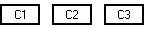
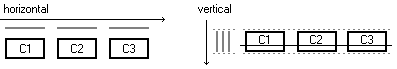
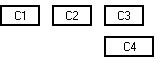
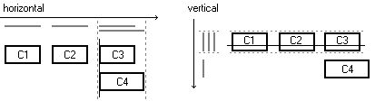
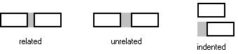
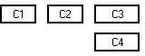

GroupLayout es un gestor de diseño que fue desarrollado para los constructores de IGUs tales como
Matisse, el constructor de IGUs suministrado por el EID Netbeans. Aunque el gestor de diseño fuera
originalmente diseñado para ajustarse a las necesidades del constructor IGU, también funciona bien con la
codificación nanual. Esta descripción le enseñará cómo funciona GroupLayout y le mostrará cómo
usar GroupLayout para construir IGUs, si elige usar un constructor de IGUs como Matisse o escribe
su propio código.
GroupLayout combinado con una herramienta de construcción para diseñar su IGU.
Una de tales herramientas de construcción es el
EID NetBeans. De otra manera, si quiere
codificar a mano y no quiere usar GroupLayout, entonces se recomienda GridBagLayout
como el gestor de diseño más flexible y potente.
Si está interesado en usar JavaFX para crear su IGU, vea Trabajar Con Diseños en JavaFX.
GroupLayout funciona con los diseños horizontales y verticales separadamente. El diseño está
definido para cada dimensión independientemente. No necesita preocuparse sobre la dimensión vertical
cuando define el diseño horizontal, y vice versa, ya que el diseño a lo largo de cada eje es totalmente
independiente del diseño a lo largo del otro eje.
Cuando se enfoca en simplemente una dimensión, sólo tiene que resolver la mitad del problema al mismo tiempo.
Esto es más fácil que manejar ambas dmenmsiones a la vez. Esto significa, por supuesto, que cada componente
necesita ser definido dos veces en el diseño. Si olvida hacer esto, GroupLayout generará una
excepción.
GroupLayout usa dos tipos de arreglos -- secuencial y paralelo, combinado con la compsición
jerárquica.
BoxLayout o FlowLayout harían a lo largo de un eje. La posición de cada
componente es definida como relativa al componente precedente.
Usualmente, los componentes colocados en paralelo en una dimensión están en una secuencia en la otra, de forma que no se solapan.
Lo que hace que estos dos arreglos sean poderosos es que se pueden anidar jerárquicamente. Para este propósito
GroupLayout define grupos de diseño. Un grupo es o secuencia o paralelo y puede contener
componetes, otros gurpos y espacios (descritos abajo).
El tamaño de un grupo secuencial es la suma de los tamaños de los elementos contenidos, y el tamaño de un grupo paralelo corresponde al tamaño del elemento más grande (aunque, dependiendo de los elementos y dónde aterriza la línea base, el tamaño de un grupo alineado a una línea base puede ser un poquito más grande que el elemento más grande).
Definir un diseño significa definir cómo los componente serán agrupados combinando los arreglos secuenciales y paralelos.
Usemos un ejemplo simple para ver cómo funciona en la práctica.
Empecemos con algo simple, justo tres componentes en una fila:

Expresaremos este diseño usando grupos. Empezando con el eje horizontal es facil ver que hay un grupo secuencial de tres componentes dispuestos de izquierda a derecha. A lo largo del eje vertical hay un grupo paralelo de los mismos 3 componentes con la misma ubicación, tamaño y línea base

En pseudo código, la especificación de diseño podría parecer como esto (el código real está en la sección Escribir código de abajo):
horizontal layout = sequential group { c1, c2, c3 }
vertical layout = parallel group (BASELINE) { c1, c2, c3 }
Esto ilustra un principio mencionado anteriormente: los componentes agrupados secuencialmente en una dimensión usualmente forma un grupo paralelo en la otra dimensión.
Ahora permítanos añadir un componente más, C4, alineado a la zquierda con C3:

A lo largo del eje horizontal, el nuevo componente ocupa el mismo espacio horizontal que C3, de modo que forma un grupo paralelo con C3. A lo largo del eje vertical C4 forma un grupo secuencial con el grupo paralelo original de los tres componentes.

En pseudo código, la especificación de diseño ahora se parece a esto:
horizontal layout = sequential group { c1, c2, parallel group (LEFT) { c3, c4 } }
vertical layout = sequential group { parallel group (BASELINE) { c1, c2, c3 }, c4 }
Ahora que entiende los aspectos más importantes de diseñar diseños con GroupLayout. Hay
simplemente unos pocos detalles más que explicar: cómo añadir espacios, cómo definir el tamaño y el
comportamiento al redimiensionar, cómo definir el diseño justificado, y cómo escribir código real.
Un espacio puede ser considerado como un componente invisible de un cierto tamaño. Los espacios de tamaño arbitrairo pueden ser añadidos a los grupos simplemente como componentes u otros grupos. Usando espacios puede controlar precisamente la distancia entre componentes o desde el borde del contenedor.
GroupLayout también define espacios automáticos que corresponden a las
distancias preferidas entre los componente vecinos (o entre un componente y el borde contenedor). El
tamaño de tal espacio es calculado dinámicamente basándose en la apariencia que está usando la aplicación
(la clase LayoutStyle es usada para esto). Hay dos ventajas al usar espacios automáticos
(preferidos): no tiene que especificar los tamaños en pixeles de los espacios, y estos se ajustan
automáticamente a la apariencia que el IU ejecuta, reflejando las pautas de apariencia reales.
GroupLayout distingue entre (a) el espacio preferido entre dos componentes y (b) el espacio
preferido entre un componente y el borde del contenedor. Hay métodos correspondientes en la IPA de
GroupLayout para añadir estos espacios (addPreferredGap y
addContainerGap). Hay tres tipos de espacios para componente: related, unrelated e
indented. La enumeración LayoutStyle.ComponentPlacement define las constantes
correspondientes que son usadas como parámetros del método addPreferredGap:
RELATED, UNRELATED e INDENT. La diferencia entre los espacios
relacionados y los no relacionados es simplemente en tamaño — la distancia entre los componentes no
relacionados es un poco más grande. Indented representa una distancia horizontal preferida de dos
componentes cuando uno de ellos se coloca debajo del segundo con sangría.

Como se mencionó arriba, GroupLayout puede insertar espacios automáticamente — si no añade
sus propios espacios explícitamente, éste añade los espacios preferidos relacionados por usted. Este no
es el comportamiento por defecto, sin embargo. Tiene que activar esta característica invocando
setAutoCreateGaps(true) y
setAutoCreateContainerGaps(true) sobre el GroupLayout. Entonces obtendrá el espaciado
correcto automáticamente.
Ahora, echemos un vistazo al código real que crea el diseño descrito arriba.
Supongamos que tenemos un contenedor llamado panel y los mismos cuatro componentes ya presentados
(c1, c2, c3, y c4). Primero, creamos un nuevo objeto
GroupLayout y lo asociamos con el panel:
GroupLayout layout = new GroupLayout(panel);
panel.setLayout(layout);
Especificamos la inserción automática de espacios:
layout.setAutoCreateGaps(true);
layout.setAutoCreateContainerGaps(true);
Entonces, definimos los grupos y añadimos los componentes. Establecemos un grupo raíz para cada dimensión
usando los métodos setHorizontalGroup y setVerticalGroup. Los grupos osn creados
con los métodos createSequentialGroup y createParallelGroup. Los componentes son
añadidos a los grupos usando el método addComponent.
layout.setHorizontalGroup(
layout.createSequentialGroup()
.addComponent(c1)
.addComponent(c2)
.addGroup(layout.createParallelGroup(GroupLayout.Alignment.LEADING)
.addComponent(c3)
.addComponent(c4))
);
layout.setVerticalGroup(
layout.createSequentialGroup()
.addGroup(layout.createParallelGroup(GroupLayout.Alignment.BASELINE)
.addComponent(c1)
.addComponent(c2)
.addComponent(c3))
.addComponent(c4)
);
Puede especificar la alineación para los grupos paralelos. Puede ser una de las siguientes constantes definidas
en la enumeración GroupLayout.Alignment: LEADING, TRAILING,
CENTER, y BASELINE. Estas constante son usadas para ambas dimensiones y dependen de
si la orientación del componente es de izquierda-a-derecha o de derecha-a-izquierda (arriba-a-abajo o
abajo-a-arriba). Por ejemplo, si la orientación horizontal (vertical) del componente es izquierda-a-derecha
(arriba-a-abajo) LEADING significa izquierda (arriba) mientras TRAILING significa
derecha (abajo). CENTER significa "centrado" en ambas dimensiones. Si no especifica el
alineamiento, LEADING será usado. El alineamiento BASELINE es válido sólo en la
dimensión vertical.
La alineación en el diseño de un grupo sólo tiene significado para componentes
de diferentes tamaños. Los componentes del mismo tamaño serán automáticamente alineados para cada una de las
constantes GroupLayout.Alignment.
Algunos comentarios sobre el código:
addComponent usadas para rellenar los
grupos. El método addComponent siempre devuelve el grupo en el cual es llamado. Gracias a esto
no necesita usar variables locales para contener los grupos.
createXXXGroup. Siguiente estas regls simples, es más fácil añadir un componente nuevo o
eliminar uno existente.
No hay límite en el número de componentes redimensionables en un diseño.
El tamaño de cada componente en un GroupLayout está restringido por tres valores; tamaño mínimo,
tamaño preferido y tamaño máximo. Estos tamaños controlan cómo el componente se redimensiona dentro del diseño.
El método GroupLayout.addComponent(...) permite que las restricciones de tamaño sean especificadas.
Si no se especifican explícitamente, el diseño le pide al componnete sus tamaños por defecto (usando los
métodos getMinimumSize(), getPreferredSize() y getMaximumSize() del
componente). No necesita especificar nada para la mayoría de los componentes, como hacer un
JTextField redimensionable o un JButton fijo, porque los componentes por sí mismos
tienen el comportamiento de redimensionado deseado por defecto. Por otro lado puede sobreescribir el
comportamiento por defecto. Por ejemplo puede hacer un JTextField fijo o un JButton
redimensionable.
GroupLayout define constantes que suministran un control preciso sobre el comportamiento del
redimensionamiento. Pueden ser usadas como parámetros en el método
addComponent(Component comp, int min, int pref, int max). Aquí tiene dos ejemplos:
group.addComponent(component, 0, GroupLayout.DEFAULT_SIZE, Short.MAX_VALUE) ...
Esto permite al componente a redimensionarse entre el tamaño cero (mínimo) a cualquier tamaño
(Short.MAX_VALUE donde tamaño máximo significa "infinite"). Si queríamos que el
componente no encoja por debajo de su tamaño mínimo por defecto, usaríamos
GroupLayout.DEFAULT_SIZE en vez de un 0 en el segundo parámetro.
group.addComponent(component, GroupLayout.PREFERRED_SIZE, GroupLayout.DEFAULT_SIZE,
GroupLayout.PREFERRED_SIZE) ...
En estos ejemplos el tamaño inicial del componente no es alterado, su tamaño por defecto es el tamaño preferido
del compoente. Si queríamos un tamaño específico para el compoente, lo especificaríamos en el segundo parámetro
en vez de usar GroupLayout.DEFAULT_SIZE.
Espacios Dimensionables
Especificar el tamaño y la resizabilidad se aplica a los espacios también, incluyendo los preferidos. Por ejemplo, puede especificar un espacio preferido entre dos componentes que actúe como un muelle empujando los componentes el uno lejos del otro (a los lados opuestos del contenedor). La distancia preferida de los dos componentes es usada sólo como el tamaño mínimo del espacio. Vea el siguiente esbozo:
layout.createSequentialGroup()
.addComponent(c1)
.addPreferredGap(LayoutStyle.ComponentPlacement.RELATED,
GroupLayout.DEFAULT_SIZE, Short.MAX_VALUE)
.addComponent(c2);
Los elementos redimensionables colocados en un grupo paralelo se estiran para llenar el espacio del grupo
determinado por el elemento más grande del grupo, de forma que terminen alineados con el mismo tamaño.
GroupLayout también proporciona control sobre si el grupo paralelo que lo rodea debe cambiar el
tamaño. Si el cambio de tamaño del grupo es suprimido, esto previene a los elementos contenidos de crecer por
encima del tamaño preferido del grupo. De esta forma puede hacer un bloque de componentes se alinee en ambos
lados, o restringir a componentes individuales a tener el mismo tamaño.
Tratemos de lograr el mismo tamaño para dos componentes de nuestro ejemplo (c3 y c4
en la dimensión horizontal):
layout.createParallelGroup(GroupLayout.Alignment.LEADING, false)
.addComponent(c3, GroupLayout.DEFAULT_SIZE, GroupLayout.DEFAULT_SIZE, Short.MAX_VALUE)
.addComponent(c4, GroupLayout.DEFAULT_SIZE, GroupLayout.DEFAULT_SIZE, Short.MAX_VALUE);
El mecanismo subyacente funciona como sigue:
c4 en nuestro ejemplo.
c3 es
efectivamente estirado, el tamaño de c4 ya corresponde al tamaño del grupo.
Como resultado, c3 y c4 tendrán el mismo ancho. Los componentes no se
redimensionarían aún más porque el grupo paralelo en sí mismo no es redimensionable (el segundo parámetro del
método createParallelGroup, encima, es false).

Pregunta para lectores atentos: ¿Porqué definimos ambos componentes en el grupo paralelo como redimensionables
en este ejemplo? Parece suficiente tener solo c3 redimensionable ya que c4 no se
estira de todos modos ...
La respuesta es: debido a la independencia de plataforma y localización. De otra forma tendríamos que confiar
en que el componente c4 siempre sea más grande que c3. Pero esto puede cambiar cuando
la aplicación se ejecuta en una plataforma diferente o es traducida a otro lenguaje. Al tener ambos componentes
redimensionables, se ajustan entre sí, sin importar cuál sea más grande en un momento dado.
El caso previo es especial porque los componentes están en el mismo grupo paralelo. Pero, ¿y si quisiéramos que
los componentes no relacionados tuvieran el mismo tamaño? Claramente, el mismo tamaño no siempre se puede
garantizar agrupando . Los botones OK y Cancel en una fila en la parte inferior de un diálogo son un buen
ejemplo, Para este propósitoGroupLayout proporciona un método linkSize. Este método
permite que el tamaño de componentes arbitrarios estén enlazados independientemente de donde estén ubicados.
El tamaño resultante de los componentes enlazados es establedico de acuerdo al componente más grande. Por
ejemplo:
layout.linkSize(SwingConstants.HORIZONTAL, c3, c4);
En este ejemplo, el tamaño está enlazado selectivamente para la dimensión horizontal.
Hay dos métodos importantes que puede usar para hacer cambios a su IGU en tiempo de ejecución,
replace() y setHonorsVisibility(). Usar estos dos métodos, puede intercambiar
componentes o cambiar la visibilidad de los componentes en tiempo de ejecución y hacer que el IGU se reordene
en consecuencia.
replace(Component existingComponent, Component newComponent) reemplaza un componente existente con
uno nuevo. Una de las operaciones comunes necesitadas para los diseños dinámicos es la habilidad para
reemplazar componentes como este. Por ejemplo, quizás una casilla de verificación alterna entre un componente
que muestra un gráfico o un árbol. GroupLayout hace este escenario simple con el método
replace(). Puede intercambiar componentes sin recrear todos los grupos.
Otra operación común en interfaces de usuario es cambiar dinámicamente al visibilidad de los componentes.
Quizás los componentes son son mostrados sólo cuando un usuario completa más temprano porciones de un
formulario. Para evitar que los componentes se revuelvan en tal escenario, se debe tomar espacio
independientemente de la visibilidad de los componentes. GroupLayout ofrece dos formas de
configurar cómo los componentes invisibles son tratados. El método setHonorsVisibility(boolean)
establece globalmente cómo son manejados los componentes invisibles. Un valor verdadero, el predeterminado,
indica que los componentes invisibles son tratados como si no estuvieran ahí. Por otro lado, un valor falso
suministra espacio para los componentes invisibles, tratándolos como si fueran visibles. El método
setHonorsVisibility(Component,Boolean) pued ser usada para configurar el comportamiento al nivel
de un componente específico. Para determinar cómo la visibilidad es manejada, GroupLayout
comprueba primero si un valor ha sido especificado para el componente, si no, comprueba el establecimiento
de la propiedad global.
GroupLayout en la Edición Estandar de Java 6 consiste de tres distintos cuerpos de trabajo: la
facilidad de obtener la línea base para un componente, la habilidad para obtener el espacio preferido
entre componentes (LayoutStyle), y GroupLayout. Este trabajo fue originalmente
hecho como un proyecto de fuente abierta en
http://java.net/projects/swing-layout/
NetBeans 5.0 soporta GroupLayout por medio del proyecto swing-layout. Debido al éxito de este
trabajo, las tres porciones de GroupLayout han sido incorporadas en la Edición Estándar de
Java version 6. La principal diferencia entre el GroupLayouten Java SE 6 y swing-layout está
en el nombre del paquete y los nombres del método. NetBeans 5.5 proporciona la habilidad de usar
GroupLayout en Java SE 6, o el GroupLayout en swing-layout. Qué versión usa
NetBeans es determinado por la versión de la plataforma Java que su proyecto tiene. Un proyecto que utiliza
Java SE 6 usa el GroupLayout de Java SE, de otra manera se usará el GroupLayout
del proyecto swing-layout.